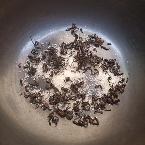
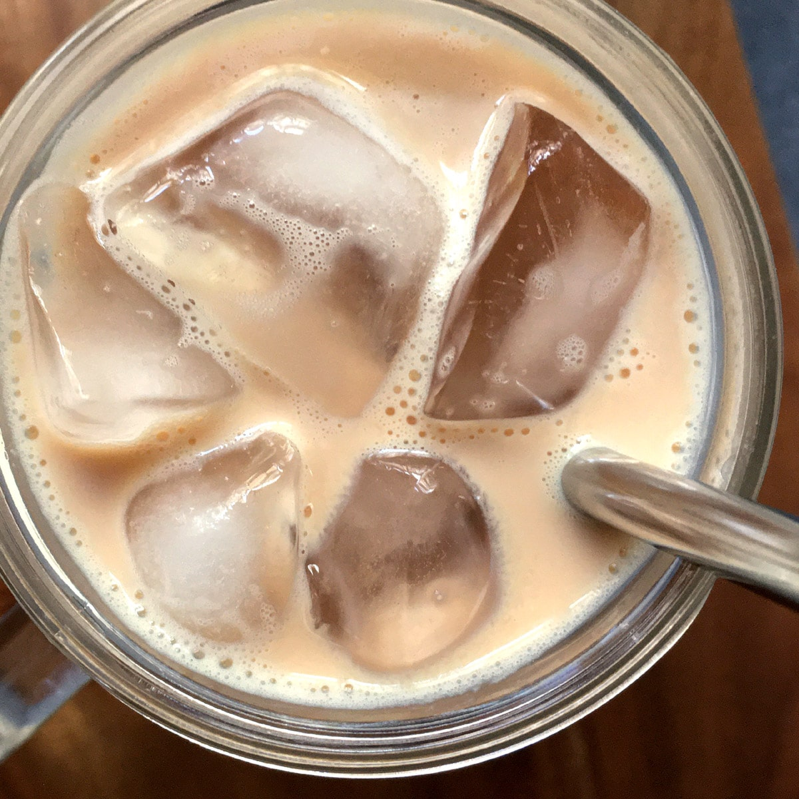
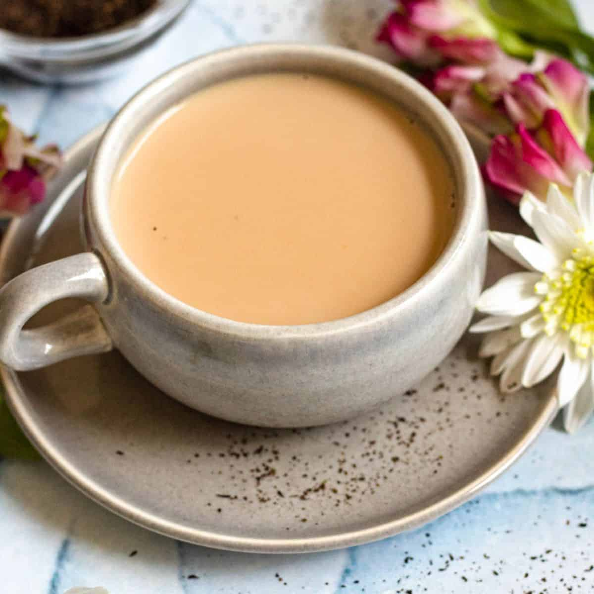

all three ingredients could be adjusted based on personal preferneces! some common tea type for milk tea are black tea, green tea, oolong, or earl gray. they may look similar but each kinds of teas have distinctive tastes! and of course, the portion of milk could be adjusted based on how strong you would want the taste of tea vs milk. sugar too, but for this recipe it is recommended to not lessen the portion too much since it is essential for the caramelization.